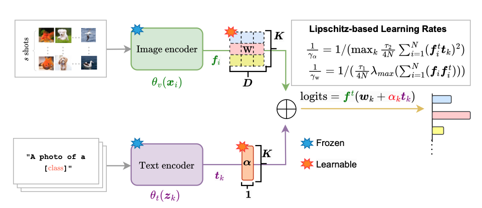

Jose Dolz
Associate Professor |
 |


Short-Bio
I am an Associate Professor in the Department of Software and IT Engineering at the ETS Montreal. Prior to be appointed Professor, I was a post-doctoral fellow at the same institution. I obtained my B.Sc and M.Sc in the Polytechnic University of Valencia, Spain, and his Ph.D. at the University of Lille 2, France, in 2016. I was recipient of a Marie-Curie FP7 Fellowship (2013-2016) to pursue my doctoral studies. My current research focuses on deep learning, medical imaging, optimization and learning strategies with limited supervision. Up to date, I have (co-)authored over 80 fully peer-reviewed papers, many of which published in the top venues in medical imaging (MICCAI/IPMI/MedIA/TMI/NeuroImage), computer vision (CVPR, ICCV) and machine learning (ICML, NeurIPS). Furthermore, I have given 5 tutorials on learning with limited supervision at MICCAI (2019-2022) and ICPR(2022), participated in the organization of three summer schools in Deep Learning for Medical Imaging and recognized several times as Outstanding Reviewer (MICCAI'20, ECCV'20, CVPR'21, CVPR'22, NeurIPS'22, ICCV'23).
News
[03/2024] Two papers early accepted at MICCAI 2024 [03/2024] I am acting as Area Chair at NeurIPS 2024. [03/2024] I am acting as Area Chair at ECCV 2024. - [03/2024] Two papers accepted at CVPR'24.
- [11/2023] Two recent papers accepted at MedIA: Do We Really Need Dice? The Hidden Region-Size Biases of Segmentation Losses Paper Anatomically-aware Uncertainty for Semi-supervised Image Segmentation Medical Image Analysis Paper
- [07/2023] One paper accepted at ICCV'23.
- [06/2023] Two papers accepted at MICCAI'23.
- [03/2023] Two papers accepted at CVPR'23.
- [02/2023] Two papers accepted at IPMI'23 (both as oral).
- [01/2023] I am acting as Area Chair at MICCAI 2023.
- [01/2023] One paper accepted at MedIA: Mixed-supervised segmentation: Confidence maximization helps knowledge distillation Paper Code
- [10/2022] One paper accepted at MedIA: Constrained unsupervised anomaly segmentation Paper Code
[06/2021] One paper accepted at MICCAI'22: Leveraging Labeling Representations in Uncertainty-based Semi-supervised Segmentation Paper [03/2022] One paper accepted at CVPR'22: The Devil is in the Margin: Margin-based Label Smoothing for Network Calibration Paper Code [01/2022] One paper accepted at MedIA: Weakly supervised segmentation with cross-modality equivariant constraints Paper Code [01/2022] I am acting as Area Chair at MICCAI 2022. [01/2022] I will be part of the technical committee of MIDL for the next 3 years (2022-2024). [06/2021] One paper accepted at MICCAI'21: Orthogonal Ensemble Networks for Biomedical Image Segmentation Paper Code [02/2021] I am acting as Area Chair at MICCAI 2021.
Selected Publications [Google Scholar]
| Class and Region-Adaptive Constraints for Network Calibration. Balamurali Murugesan, Julio Silva-Rodriguez, Ismail Ben Ayed, Jose Dolz MICCAI 2024 (Early accept). |
|
| A Closer Look at the Few-Shot Adaptation of Large Vision-Language Models. Julio Silva-Rodriguez, Sina Hajimiri, Ismail Ben Ayed, Jose Dolz CVPR 2024. |
|
|  | LP++: A Surprisingly Strong Linear Probe for Few-Shot CLIP. Yunshi Huang, Fereshteh Shakeri, Jose Dolz, Malik Boudiaf, Houda Bahig, Ismail Ben Ayed CVPR 2024. |
| Do We Really Need Dice? The Hidden Region-Size Biases of Segmentation Losses. Bingyuan Liu, Jose Dolz, Adrian Galdran, Riadh Kobbi, Ismail Ben Ayed MedIA 2024. |
|
| Anatomically-aware Uncertainty for Semi-supervised Image Segmentation. Sukesh V Adiga, Jose Dolz, Hervé Lombaert MedIA 2024. |
|

|
Parametric Information Maximization for Generalized Category Discovery. Florent Chiaroni,Jose Dolz, Ziko Imtiaz Masud, Amar Mitiche, Ismail Ben Ayed ICCV 2023. [PDF] |

|
Trust your neighbours: Penalty-based constraints for model calibration. Balamurali Murugesan, Sukesh Adiga V, Bingyuan Liu, Hervé Lombaert, Ismail Ben Ayed, Jose Dolz MICCAI 2023. |

|
Maximum Entropy on Erroneous Predictions (MEEP): Improving model calibration for medical image segmentation. Agostina Larrazabal, Cesar Martinez,Jose Dolz*, Enzo Ferrante* MICCAI 2023. [PDF] |

|
A Strong Baseline for Generalized Few-Shot Semantic Segmentation. Sina Hajimiri, Malik Boudiaf, Ismail Ben Ayed, Jose Dolz CVPR 2023. |
 |
Bingyuan Liu, Jerome Rony, Adrian Galdran, Jose Dolz, Ismail Ben Ayed CVPR 2023. |
 |
Farzad Beizaee, Christian Desrosiers, Gregory A Lodygensky, Jose Dolz IPMI 2023, Oral Presentation. |
 |
Bach Ngoc Kim, Jose Dolz, Pierre-Marc Jodoin, Christian Desrosiers IPMI 2023, Oral Presentation. |
 |
Balamurali Murugesan, Bingyuan Liu, Adrian Galdran, Ismail Ben Ayed, Jose Dolz MedIA 2023. |
 |
Sukesh V Adiga, Jose Dolz, Herve Lombaert MIDL 2023, Oral Presentation. |
 |
|
 |
|
 |
|
 |
Sukesh V Adiga, Jose Dolz, Hervé Lombaert MICCAI 2022. |
 |
Bingyuan Liu, Ismail Ben Ayed, Adrian Galdran, Jose Dolz CVPR 2022. |
 |
Gaurav Patel, Jose Dolz MedIA 2022. |
 |
Malik Boudiaf, Hoel Kervadec, Ziko Imtiaz Masud, Pablo Piantanida, Ismail Ben Ayed, Jose Dolz CVPR 2021. |
 |
Julio Silva Rodriguez, Valery Naranjo, Jose Dolz, BMVC 2021. |
 |
Bach Ngoc Kim, Jose Dolz,, Christian Desrosiers, Pierre-Marc Jodoin BMVC 2021. |
 |
Jose Dolz,Christian Desrosiers, Ismail Ben Ayed IPMI 2021. |
 |
Agostina Larrazabal, Cesar Martin, Jose Dolz, Enzo Ferrante MICCAI 2021, Oral Presentation. |
 |
Soufiane Belharbi, Jerome Rony, Jose Dolz, Ismail Ben Ayed, Luke McCaffrey, Eric Granger TMI 2021. |
 |
Mathilde Bateson, Jose Dolz,, Hoel Kervadec, Herve Lombaert, Ismail Ben Ayed TMI 2021. |
 |
Bach Ngoc Kim, Jose Dolz, Pierre-Marc Jodoin, Christian Desrosiers TMI 2021. |
 |
Hoel Kervadec, Houda Bahig, Laurent Letourneau-Guillon, Jose Dolz, Ismail Ben Ayed MIDL 2021, Oral Presentation (Best Paper Award). |
 |
Reza Azad, Abdur Fayjie, Claude Kauffman, Ismail Ben Ayed, Marco Pedersoli, Jose Dolz WACV 2021. |
 |
Malik Boudiaf, Ziko Imtiaz Masud, Jérôme Rony, Jose Dolz, Pablo Piantanida, Ismail Ben Ayed NeurIPS 2020. |
 |
Imtiaz Ziko, Jose Dolz, Erig Granger, Ismail Ben Ayed ICML 2020. |
 |
Mathilde Bateson, Hoel Kervadec, Jose Dolz, Hervé Lombaert, Ismail Ben Ayed MICCAI 2020. |
 |
Adrian Galdran, Jose Dolz,, Hadi Chakor, Hervé Lombaert, Ismail Ben Ayed MICCAI 2020. |
 |
Hoel Kervadec, Jose Dolz, Shanshan Wang, Eric Granger, Ismail Ben Ayed MIDL 2020. |
 |
Ashish Sinha, Jose Dolz IEEE JBHI 2019. |
 |
Hoel Kervadec, Jose Dolz, Eric Granger, Ismail Ben Ayed MICCAI 2019. |
 |
Mathilde Bateson, Jose Dolz, Hoel Kervadec, Herve Lombaert, Ismail Ben Ayed MICCAI 2019. |
 |
Hoel Kervadec, Jihene Bouchtiba, Christian Desrosiers, Eric Granger, Jose Dolz, Ismail Ben Ayed MIDL 2019, Oral Presentation (Best Paper Runner-up). |
 |
Hoel Kervadec, Jose Dolz, Meng Tang, Eric Granger, Yuri Boykov, Ismail Ben Ayed MedIA 2019. |
 |
Jose Dolz, Karthik Gopinath, Jing Yuan, Herve Lombaert, Christian Desrosiers, Ismail Ben Ayed TMI 2018. |
 |
Hoel Kervadec, Jose Dolz, Meng Tang, Eric Granger, Yuri Boykov, Ismail Ben Ayed MIDL 2018, Oral Presentation. |
 |
Jose Dolz, Ismail Ben Ayed, Jing Yuan, Christian Desrosiers ISBI 2018, Oral Presentation. |
 |
Jose Dolz, Ismail Ben Ayed, Christian Desrosiers MICCAI 2017. |
 |
Jose Dolz, Christian Desrosiers, Ismail Ben Ayed NeuroImage 2017. |
 |
Jose Dolz, Ismail Ben Ayed, Christian Desrosiers CVPR 2017. |
Selected Awards
Academic Services
- IEEE Transactions on Medical Imaging (TMI'18-Present)
- International Journal of Computer Vision (IJCV'19-Present)
-Computer Vision and Pattern Recognition (CVPR'19-Present)
-International Conference on Computer Vision (ICCV'19,'21,'23)
-European Conference on Computer Vision (ECCV'20,'22)
-Conference on Neural Information Processing Systems (NeurIPS'21-Present)
-AAAI Conference on Artificial Intelligence (AAAI'22)
-Information Processing in Medical Imaging (IPMI'22)
-International Conference on Learning Representations (ICLR'18,'19)
Students (Current)
Julio Jose Silva Rodriguez. Visual Language pre-trained models in medical imaging (2023-) Shambhavi Misra. Realistic evaluation of Continual Test-Time adaptation (2022-) Sina Hajimiri. Generalized few-shot segmentation (2022-) Balamurali Murugesan. Exploring uncertainty estimates in deep learning models (2022-) Farzad Beizaee. Neonatal brain maturation assessment with deep multi-modal models (2021-) Sukesh Adiga. Geometry of Medical Imaging Data in very Large Datasets (2019-) Paul-Maxence Baraton. Conformal learning in deep neural networks (2022-)
Post-Doc
PhD
MSc
Interns
Students (Former)
Bingyuan Liu (2020-2023). R&D Amazon. Hoel Kervadek (2017-2021). Post-Doc Erasmus Roterdam. Bach Kim. (2019-2023) Soumitri Chattopadhyay, MSc (MITACS Globalink) (2022). PhD student at UNC Chapel Hill. Gaurav Patel, MSc (Remote Internship) (2020-2021). PhD student at Purdue University. Julien Nicolas (2021-2023). PhD student at McGill University. Bruce Cyusa Mukama (2019-2021). Julie Galliere (2021). Eng. in Amadeus-Thales. Jauffray Bruneton MSc (2019-2020). MBA student at California State University, Long Beach. Tiphaine Diot, MSc (2019-2020). Ashish Sinha, MSc (Remote Internship) (2019). Graduate Student in Computing Science. Simon Fraser University. Aarush Gupta, MSc (Remote Internship) (2018). Research engineer at Rephrase.ai Dakshit Agrawal, MSc (Remote Internship) (2018). MSc Student at Carnegie Mellon University Arnab Mondal, MSc (MITACS Globalink) (2018). PhD Student at McGill University. Jihene Bouchtiba, MSc (2017-2019). Firas Bendhaou, MSc (2017-2019). Julio Jose Silva Rodriguez (2021). Post-Doc ETS Montreal. Agostina Larrazabal (2021) Martin Van Waerebeke (2021-2022). Alexandre Gautier (2021-2022).
Post-Doc
PhD
MSc
Interns
Teaching
| 2023 | Winter | MTI881:Deep Learning for Computer Vision |
| 2022 | Fall | MTI881:Deep Learning for Computer Vision |
| 2022 | Winter | LOG635:Intelligent Systems and Algorithms |
| 2021 | Fall | MTI881:Deep Learning for Computer Vision |
| 2021 | Winter | LOG635:Intelligent Systems and Algorithms |
| 2020 | Fall | GTI771:Advanced Machine learning |
| 2020 | Winter | LOG635:Intelligent Systems and Algorithms |
| 2019 | Fall | GTI770:Machine Learning |
© Jose Dolz | Last updated: March 2023